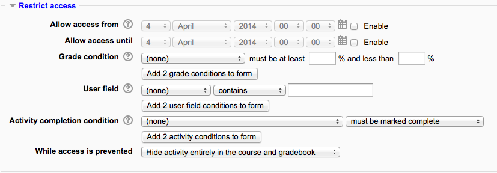
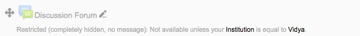

This page explains how to restrict an activity, resource or course section via user fields and/or custom profile fields.
- Conditional access must be enabled (see Conditional activities for instructions on how to enable this for your site).
- When adding or editing an activity, resource or course section scroll to the user fields in the ‘Restrict Access’ section.
- Choose which fields you want to restrict by (adding more if needed), select the restriction you want to put in place and then enter a value.
- Save the settings.
This is an example of the interface in Moodle when adding an activity to a course with the conditional functionality enabled.
This is how it will appear to users who fail to meet the restrictions set in place.
You can restrict by using one of the user fields that are located in the Moodle user table. Not all the user fields are included, as not all of them would make sense in this context. The ones included are listed below.
- AIM ID - This is the value in the ‘aim’ column
- Address - This is the value in the ‘address’ column
- City/town - This is the value in the ‘city’ column
- Country - This is the value in the ‘country’ column
- Department - This is the value in the ‘department’ column
- Email Address - This is the value in the ‘email’ column
- First name - This is the value in the ‘firstname’ column
- ICQ number - This is the value in the ‘icq’ column
- ID number - This is the value in the ‘idnumber’ column
- Institution - This is the value in the ‘institution’ column
- Interests - This is the value in the ‘interests’ column
- MSN ID - This is the value in the ‘msn’ column
- Mobile phone - This is the value in the ‘phone2’ column
- Phone - This is the value in the ‘phone1’ column
- Skype ID - This is the value in the ‘skype’ column
- Surname - This is the value in the ‘lastname’ column
- Web page - This is the value in the ‘url’ column
- Yahoo ID - This is the value in the ‘yahoo’ column
These are all the custom profile fields that have been created on the Moodle site. See User profile fields.
The operators define the relationship between the field chosen and the value entered. For example, when the user’s email must contain @school.com, the field chosen is ‘Email address’, the operator is ‘contains’ and the value is '@school.com‘.
Contains - This operator restricts access to those whose chosen field contains the value provided.
Does not contain - This operator restricts access to those whose chosen field does not contain the value provided.
Is Equal To - This operator restricts access to those whos chosen field equals the value provided.
Starts With - This operator restricts access to the activity to those whos chosen field starts with the value provided.
Ends With - This operator restricts access to the activity to those whos chosen field ends with the value provided.
Is Empty - This operator restricts access to the activity to those whos chosen field is empty. Note, if any value is provided in this case, it is ignored.